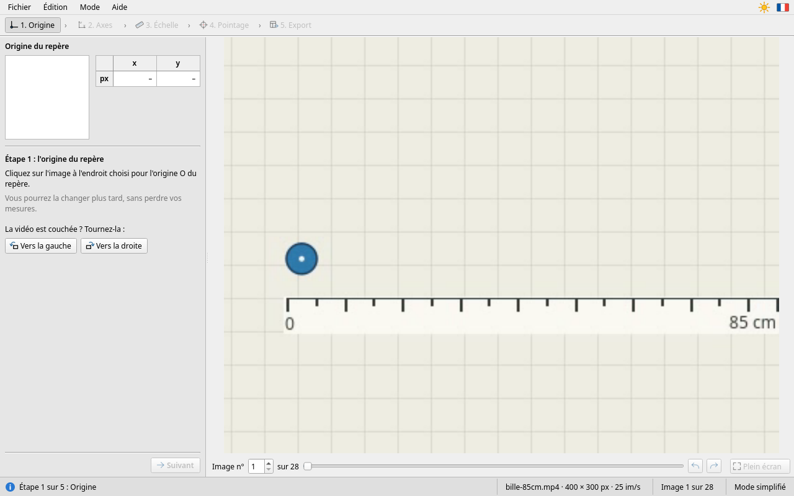
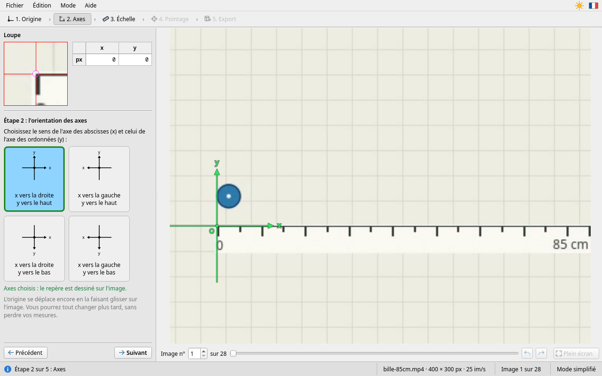
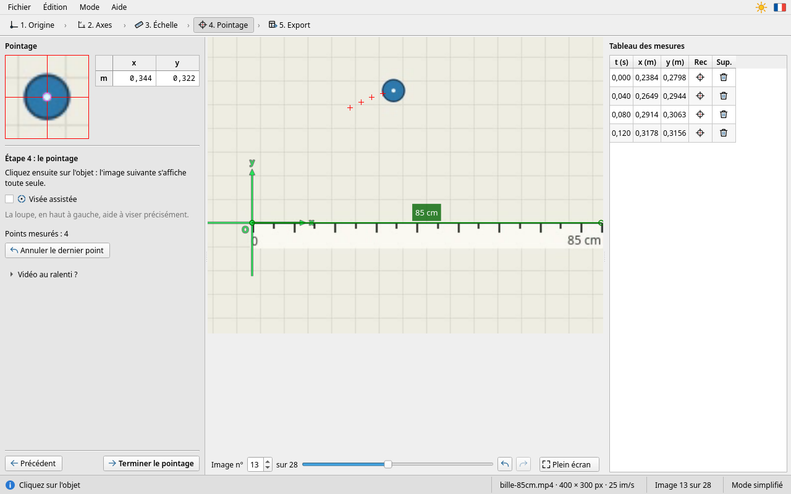
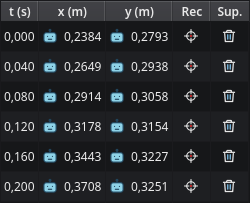
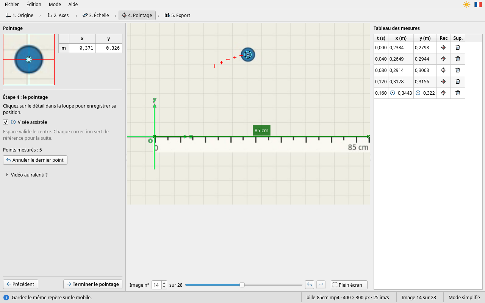
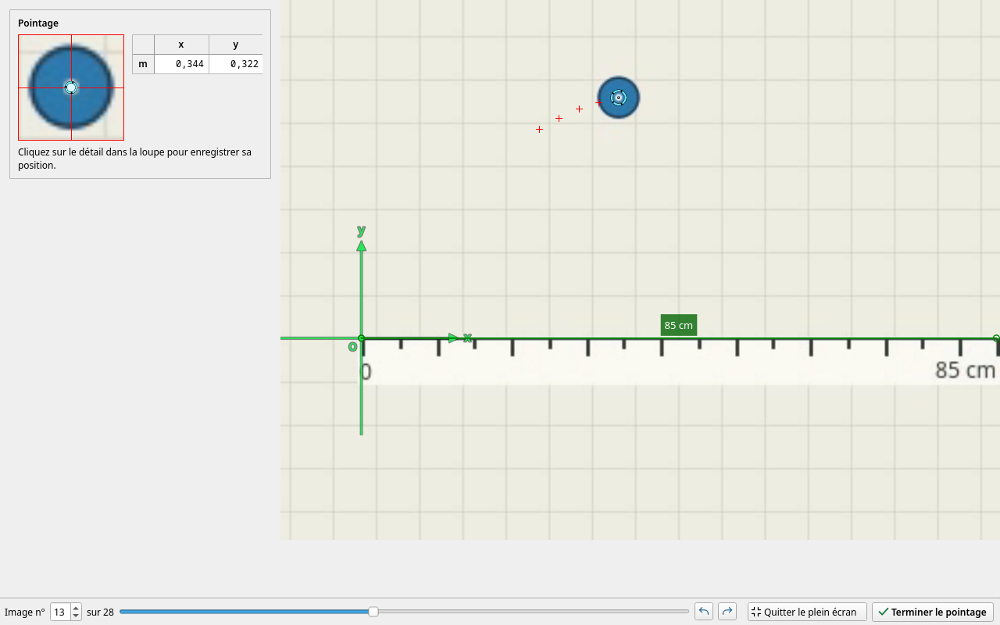

Le mode simplifié, pas à pas
De la première image utile à un tableau de positions en mètres
À gauche, en haut, la loupe et les coordonnées du point visé ; en dessous, la consigne de l'étape ; tout en bas, Précédent et Suivant. Au centre, l'image de la vidéo, et sous l'image le choix de l'image. À droite, à partir de l'étape 4, le tableau des mesures. La fenêtre entière est décrite sur la page Présentation.
Le bandeau du haut met en évidence l’étape active. Le bouton Suivant devient disponible quand vous avez effectué l’action demandée. Vous pouvez revenir aux étapes 1 à 3 après le pointage. Si vous modifiez le repère ou l’échelle, MeVCine garde vos points et recalcule leurs coordonnées.
Étape 1 : l'origine du repère
Cliquez sur l'image à l'endroit choisi pour l'origine O : souvent la position de départ de l'objet, ou un point facile à repérer (le bout d'une règle, le sol…). L'origine apparaît en vert. Pour la déplacer, cliquez ailleurs, ou faites-la glisser : bouton enfoncé, la souris l'emmène.
La vidéo est couchée ? Les boutons Vers la gauche et Vers la droite la tournent d'un quart de tour (seulement avant l'échelle et le pointage).
Profitez-en pour parcourir la vidéo avec la glissière sous l'image : repérez où le mouvement commence et où il finit.


Étape 2 : l'orientation des axes
Choisissez le sens de x et de y en cliquant sur le repère correspondant. Pour un lancer, orientez par exemple y vers le haut. À la montée, y doit alors augmenter. Pour une chute, orienter y vers le bas donne une vitesse verticale positive pendant la descente.
L’origine verte peut encore être déplacée à la souris. La déplacer modifie les coordonnées des points. Retourner un axe change le signe de la composante correspondante de la vitesse.


Étape 3 : l'échelle
- Cliquez sur Sélectionner l'étalon. Sur l'image, cliquez sur une extrémité d'un objet de longueur connue (une règle, une porte, une distance mesurée), puis sur l'autre extrémité. Vous pouvez aussi glisser d'une extrémité à l'autre. Clic droit ou Échap : annuler.
- Tapez sa longueur réelle, choisissez l'unité dans la liste
(
mm,cmoum), puis Valider (ou Entrée). On peut aussi écrire l'unité après le nombre :85 cm.
Le message « Échelle : 85 cm pour 353 pixels. » confirme la saisie. L'étalon reste dessiné sur l'image, avec sa longueur. Les positions sont ensuite données en mètre, quelle que soit l'unité de l'étalon. Comment choisir un bon étalon, et toutes les écritures permises : L'échelle.
Étape 4 : le pointage
- Avec la glissière (ou les flèches ← →), placez-vous sur la première image utile : celle où le mouvement commence. Ce sera la date t = 0.
- Cliquez sur l'objet. L'image suivante s'affiche toute seule, et le tableau gagne une ligne. Recommencez, image après image.
- Regardez la loupe, en haut à gauche, au moment de cliquer, et visez toujours le même point de l'objet : son centre, ou son bord avant.
- Annuler le dernier point (Ctrl+Z) efface le dernier point et revient sur son image ; ↷ (Ctrl+Y) le rétablit.
- Inutile de pointer toute la vidéo : arrêtez-vous quand le mouvement est fini. En revanche, on ne saute pas d'image.
- Vidéo au ralenti ? Ouvrez cette rubrique si la vidéo a été filmée au ralenti, et indiquez la cadence de prise de vue (par exemple 240 images par seconde). Voir Au ralenti.
- « Cadence variable : les dates réelles des images sont utilisées. » : la vidéo vient d'un téléphone dont les images ne sont pas régulièrement espacées. Rien à faire : MeVCine prend la vraie date de chaque image. Voir Cadence variable.
Quand vos mesures sont prêtes, cliquez sur Terminer le pointage pour ouvrir 5. Export.


Vérifier et corriger les mesures pendant le pointage
Dans le tableau à droite de la vidéo, repérez la ligne par sa date t en secondes. Lisez les coordonnées x et y dans les unités de l’en-tête. Au survol, l’aperçu indique le numéro d’image. À 25 images/s et à cadence constante, deux images successives sont séparées de 0,040 s.
- Survolez une coordonnée pour entourer l’objet correspondant. Les autres points restent visibles. Les flèches du clavier déplacent aussi l’aperçu dans le tableau.
- Pour reprendre une image, cliquez sur la cible ⌖ dans Rec, puis pointez l’objet sur l’image affichée. Échap abandonne la reprise.
- Cliquez sur la poubelle dans Sup. pour supprimer toute la ligne. Pour effacer un seul objet, sélectionnez sa coordonnée et appuyez sur Suppr. Ctrl+Z annule la suppression.


Pointer plus vite avec la visée assistée
- À l’étape 4, activez Visée assistée. Cliquez dans la vidéo sur un détail que vous pourrez viser tout au long du mouvement, par exemple le centre de la bille. Ce premier clic donne une référence pour cet objet.
- Sur l’image suivante, regardez la loupe. Si la croix est sur le détail, cliquez au centre ou appuyez sur Espace. Ce geste enregistre la mesure et passe à l’image ou à l’objet suivant.
- Si le détail est décalé, cliquez à sa position réelle dans la loupe ou dans la vidéo. Vous ajoutez ainsi un exemple de son apparence sur cette image. Si l’objet tourne, continuez à viser le même repère physique.
MeVCine compare vos exemples près de la dernière position mesurée et peut placer la croix entre deux pixels. Si le détail est méconnaissable ou si les exemples désignent des endroits différents, « Détail incertain » vous invite à pointer dans la vidéo. Si un exemple est mal placé, utilisez Rec sur sa ligne pour le corriger.
Maj et une flèche déplacent la croix d’un pixel de la vidéo. Validez avec Espace pour garder la correction comme référence. Une validation au centre d’une proposition intacte enregistre uniquement la mesure. Vous retrouvez les références de chaque objet en rouvrant le projet.


Pointer en plein écran
Le bouton Plein écran sous l’image ou la touche F11 agrandit la vidéo. Avec la visée assistée, la loupe occupe une place fixe à gauche de la vidéo. Vous pouvez cliquer dans la loupe ou sur le mobile dans la vidéo, comme dans la fenêtre. En pointage libre, le cadre change de côté à l’approche de la souris pour dégager l’image.
- En bas : le choix de l'image, ↶ ↷ pour annuler ou rétablir le dernier point.
- Quitter le plein écran (Échap ou F11) revient à la fenêtre ; le pointage continue.
- Terminer le pointage quitte le plein écran et ouvre 5. Export.


Étape 5 · Exporter les mesures
Choisissez Terminer le pointage à l’étape 4. Relisez le tableau à droite. Précédent ramène au pointage si une mesure demande une correction.
- Enregistrer le projet, pour continuer plus tard… conserve l’étalon, le repère, la cadence et les mesures. Emportez également la vidéo.
- Copier pour Python fournit les tableaux NumPy. Pour un mobile, ils s’appellent
lst_t,lst_xetlst_y. - Enregistrer en CSV… crée les colonnes pour le tableur. Lisez leurs unités sur la première ligne.
Une séance enregistrée en cours de pointage reprend à l’étape 4 si le repère et l’échelle sont prêts. Un suivi automatique terminé et enregistré en mode expert s’ouvre à l’export dans le guide lorsque ces étapes sont faites. Voir les exemples d’export.